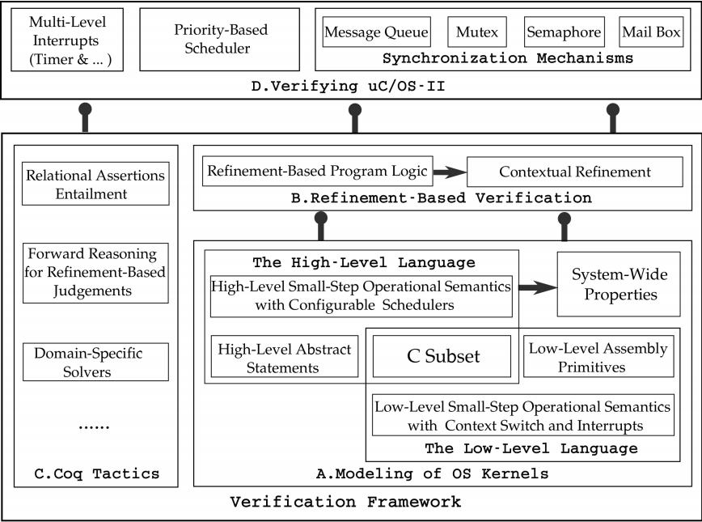
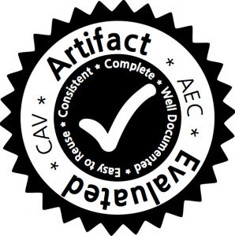

|
|
We propose a practical verification framework for preemptive OS kernels. The framework models the correctness of API implementations in OS kernels as contextual refinement of their abstract specifications. It provides a specification language for defining the high-level abstract model of OS kernels, a program logic for refinement verification of concurrent kernel code with multi-level hardware interrupts, and automated tactics for developing mechanized proofs. The whole framework is developed for a practical subset of the C language. We have successfully applied it to verify key modules of a commercial preemptive OS uC/OS-II, including the scheduler, interrupt handlers, message queues, and mutexes, etc. We also verify the priority-inversion-freedom (PIF) in uC/OS-II. All the proofs are mechanized in Coq. To our knowledge, our work is the first to verify the functional correctness of a practical preemptive OS kernel with machine-checkable proofs. |
|
 Figure 1. Overview |
Paper |
Source code and Rocq buildThe current CertiuCOS2 repository on GitCode contains the research framework, uC/OS-II specifications and proofs, and the Rocq 9.2 port. All 224 proof source files are included in the build and independent kernel-checking targets.
Original CAV 2016 artifactThese materials document the original Coq development. Use the GitCode README above for the current Rocq build.
|
Paper authors (affiliations in 2016)
|